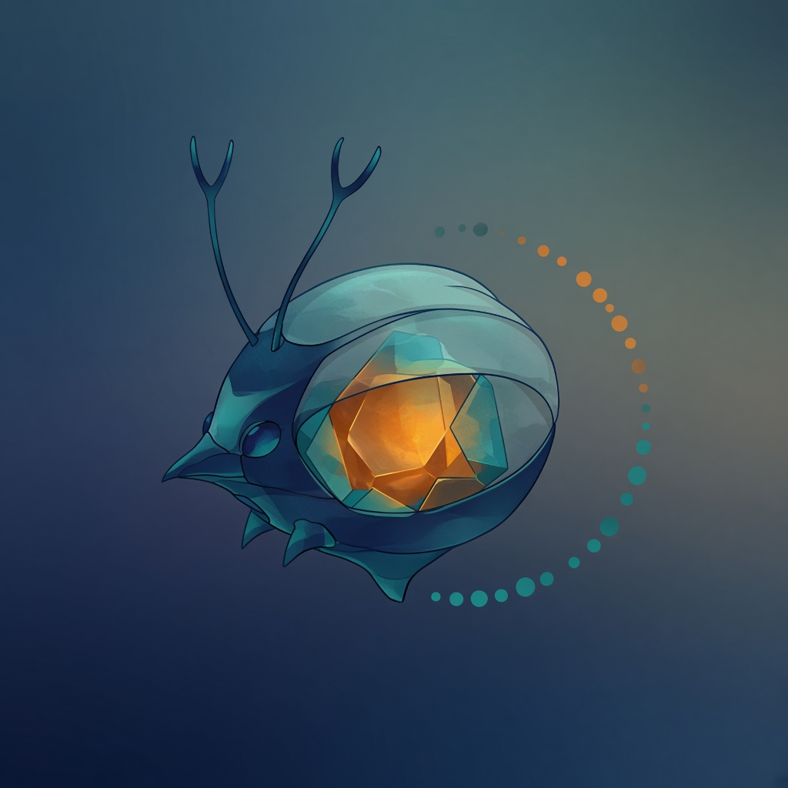

Contract
WHAT, constraints, and DONE before build.
Retornatus
A repo-native governance harness for AI coding agents — Contracts before code, gates that stop false “done”, and Evidence that lives in git.

.retornatus/ survives sessionsWHAT, constraints, and DONE before build.
Non-zero exit = STOP. Claim-bound Evidence → verdict.
Files + wake beat chat scrollback.
Research current sources — no rotting packs.
Demand → Situation → Contract → Action
→ Skill? → Execution (host) → Evidence → Assurance
→ Learning / Skill evolution → return informed
Your host executes. Retornatus governs and records.
uv tool install retornatus
cd /path/to/your-app
retornatus init
retornatus integrate
retornatus doctorPython 3.11+ · uv recommended · then open the project in your AI coding agent.